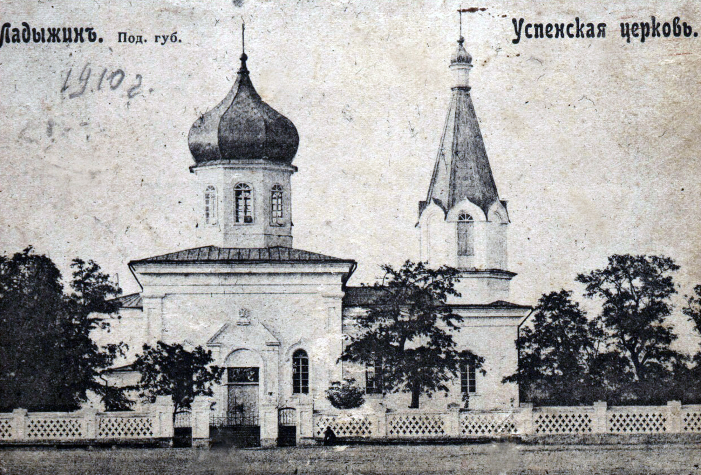
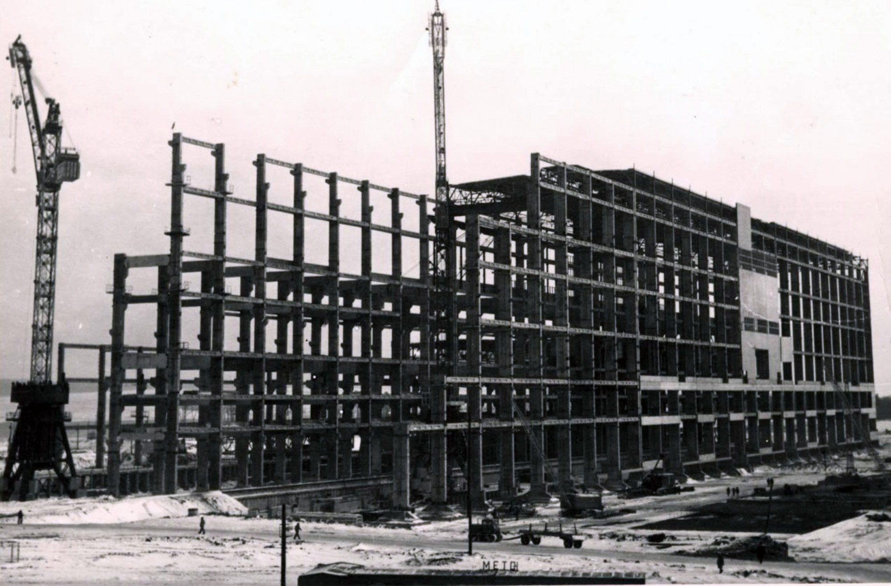

Історія міста
На головну >Місто
Ладижин
належить до найдревніших слов'янських поселень. У вітчизняній історії Ладижин
згадується у працях
знаменитого літописця М.Карамзіна. В його «Історії держави Російської» пишеться, що Ладижин у 1240
році
відбивав напад
військ Батия, але захисники фортеці не змогли її відстояти і Ладижин був спалений, а мешканці
вирізані.
Під гнітом
монголо-татар ладижинці були до 1363 року. Саме в цьому році литовський князь Ольгерд розгромив
монголо-татар, після
чого фортеця перейшла під владу Литовського Великого князівства. З 1569 року Ладижин перейшов під
владу
Польщі після
створення держави Речі Посполитої.
Спливали віки, містечко піднімалось із попелу, населялось і відроджувалось. Наступні історичні
відомості
стосуються 17
століття, коли Ладижин був фортецею і входив до Брацлавського воєводства. У ньому проживало на той
час
майже 6000 осіб.
Видатний турецький мандрівник Євлей Челебі у своїй праці «Книга подорожей» зазначив, що в 1657 році
Ладижин був великою
фортецею, в якій знаходилось десять тисяч бійців, 150 гармат. У самій фортеці були житлові будинки,
церкви, торгові
ряди, базар та декілька «заїжджих» будинків для торговців. Після закінчення війн між Польщею,
Туреччиною
та Росією в
другій половині ХVІІ століття, за даними «Подільських єпархіальних відомостей» 1863 року, в 1775
році у
Ладижині було
180 дворів.
У 1793 році, після першого розподілу Польщі, Ладижин перейшов під владу Росії в складі Гайсинського
повіту
Кам'янець-Подільської губернії. В 1825 році Ладижин відвідав російський імператор Олександр І. Із
1832
року всі
ладижинські землі були конфісковані і передані у відання військових поселень, а до цього, в ХV ст.,
місто належало роду
князів Коротких. Із 1595 року Ладижин переходить до князів Вишневецьких, із 1775 року знаходиться у
володінні князів
Потоцьких і з 1805 року переходить до князів Собанських, які втратили його після участі у польському
повстанні проти
Росії. В 1866 році місто стало цивільним.
У першій третині XIX ст. Ладижин продовжував зростати, збільшувалося його населення. В цей час
зведено
на кошти селян
дві кам'яні церкви. Коли Ладижин належав до військових поселень, тут була кантонійська школа
(гарнізонна
школа). У 1859
році в Ладижині відкрито парафіяльну школу (початкова однорічна школа першої ланки освіти) для
хлопчиків. На утримання
її селянська община вносила 60 крб. сріблом. Від часу заснування військового поселення вся земля
була
казенною. Мешканці
Ладижина відбували повинності на користь військовопоселенського відомства. У 1859 році вони були
скасовані, а землю
передали в користування селян, за що вони повинні були платити чинш (фіксована плата в грошовій або
натуральній формі за
користування земельним наділом). У 1866 році Ладижин було передано у відання цивільних властей. Лише
1871 року мешканці
Ладижина були наділені землею. За 4933 десятини вони щорічно вносили 206 крб. 50 коп. сріблом
викупних
платежів. На цей
період в Ладижині налічувалося 1062 мешканця, 525 дворів. Тим часом, у містечку з'явилося кілька
глитаїв
(багатих
власників, які визискували батраків і бідняків), які зосередили в своїх руках сотні десятин землі.
Основна ж маса селян
прожити зі своєї землі не могла, тому ходила на заробітки до багатіїв, на лісорозробки, на
будівництво
залізниці або
займалася промислами.
 Пореформений період в Ладижині
відзначався швидким зростанням промисловості: з'явилися казенний
спиртовий
завод, 5
суконних фабрик, 3 цегельні, шкіряний та черепичний заводи, 6 водяних млинів, шовковична та тютюнова
плантації. Ладижин
перетворився на досить велике містечко - у ньому налічувалося 1042 двори, 7762 мешканці. Тут діяли
поштово-телеграфна
контора, селянський банк, лікарня, аптека, 4 заїжджі двори. В Ладижині розміщувались волосне
управління,
камера мирового
судді, штаб 575-го піхотного Севастопольського полку та міщанське управління. З 1871 року працювало
однокласне
міністерське училище (реорганізоване з парафіяльної школи), а з 1896 року воно стало двокласним. При
двокласному училищі
було ремісниче відділення зі столярно-токарним та слюсарно-ковальським відділеннями. Кошти на його
утримання
відраховувалися з «коробочного» збору (збір коштів з євреїв на утримання шкіл). В 1897 році відкрито
школу грамоти для
дівчаток - дочок заможних мешканців містечка. Тоді ж «попечительством про народну тверезість» при
чайній
відкрито
читальню.
Пореформений період в Ладижині
відзначався швидким зростанням промисловості: з'явилися казенний
спиртовий
завод, 5
суконних фабрик, 3 цегельні, шкіряний та черепичний заводи, 6 водяних млинів, шовковична та тютюнова
плантації. Ладижин
перетворився на досить велике містечко - у ньому налічувалося 1042 двори, 7762 мешканці. Тут діяли
поштово-телеграфна
контора, селянський банк, лікарня, аптека, 4 заїжджі двори. В Ладижині розміщувались волосне
управління,
камера мирового
судді, штаб 575-го піхотного Севастопольського полку та міщанське управління. З 1871 року працювало
однокласне
міністерське училище (реорганізоване з парафіяльної школи), а з 1896 року воно стало двокласним. При
двокласному училищі
було ремісниче відділення зі столярно-токарним та слюсарно-ковальським відділеннями. Кошти на його
утримання
відраховувалися з «коробочного» збору (збір коштів з євреїв на утримання шкіл). В 1897 році відкрито
школу грамоти для
дівчаток - дочок заможних мешканців містечка. Тоді ж «попечительством про народну тверезість» при
чайній
відкрито
читальню.
Під час Першої світової війни в кожному ладижинському дворі на постій були розташовані солдати.
Селяни
мусили їх
годувати, віддавати фураж для армійських коней.
З 1917 року по 1920 рік у Ладижині встановлювалась влада: Центральної ради, більшовиків,
австро-німецьких військ,
Директорії, армії Денікіна, польських військ, а в липні 1920 року влада остаточно перейшла в руки
Червоної армії.
У грудні 1917 року в Ладижині був створений волосний революційний комітет, який підпорядковувався
Гайсинському повіту. В
кінці 1923 року був створений Ладижинський район. В 1930 році його було ліквідовано. Місто перейшло
до
новоутвореного
Тростянецького району. З 1957 по 1963 роки Ладижин входив до Тульчинського району, а з 1963 року -
знову
до
Тростянецького.
В 20-х роках у Ладижині функціонувало більше двох десятків приватних крамниць, які торгували рибою,
хлібом, м’ясом,
різними напоями та промисловими товарами. Працювало дві повстяні майстерні, шість кузень, олійня з
ручним пресом, три
шевські майстерні. На початку 20-их років у Ладижині почали працювати організована із кустарів
артіль з
виробництва
ковпаків для скляного посуду та трудова артіль тютюнників.
У 1927 році було організовано товариство спільного обробітку землі (СОЗ) «Червоний степ». У 1929
році на
базі СОЗу
створено сільськогосподарську артіль ім. Леніна, а в 1930 році – єврейський колгосп «Національна
праця»,
який проіснував
до 1941 року. В 1932 році в Ладижині була утворена машинно-тракторна станція.
Голод 1932-1933 років не обминув містечко. За спогадами людей, що пережили той час, було дуже важко,
але, на жаль, не
залишилось документальних фактів, що підтверджують масову загибель ладижинців від голоду.
Іншою чорною сторінкою історії Ладижина є репресії 30-х років, організовані каральними загонами
НКВС. Як
підрахував
професор В. Сенченко (родом із Ладижина), було репресовано приблизно 1000-1200 місцевих жителів. У
той
час виїхати з
Ладижина було неможливо, жодних документів, у тому числі паспорта, селянам не видавали.
Покращення життя для ладижинських селян настало у 1939-1940 роках, коли одержали довгоочікувану
платню
зерном за
трудодень.
Друга світова війна принесла ладижинцям нові випробовування.
У липні 1941 року після жорстоких боїв фашистські війська окупували Ладижин. У вересні 1941 року
німецьку владу замінив
румунський окупаційний режим. В роки Великої Вітчизняної війни економіка міста була повністю
зруйнована.
13 березня 1944
року Ладижин звільнено від фашистів силами 40-ї армії 2-го Українського фронту. Згідно з актом про
збитки, завдані
німецько-фашистськими військами, від 29 вересня 1944 року, складеним комісією Ладижинської сільської
ради, було
зруйновано всі підприємства, усі колгоспні будівлі, клуб, бібліотеку, 600 житлових будівель на суму
один
мільйон двісті
тридцять одна тисяча сто двадцять п'ять карбованців у довоєнних цінах. Протягом 3-х років були
відновлені промислові
підприємства, господарські споруди, колгоспи освоїли посівні площі.
У 1968 році розпочалось будівництво Ладижинської державної районної електростанції потужністю 1 млн. 800 тис. кВт. Відкриття ДРЕС відбулося 18 січня 1972 року. Разом з Ладижинською ДРЕС будувалося багато промислових підприємств, які обслуговували спорудження самої станції. Паралельно зводилось містечко енергетиків. В 1973 році Ладижин отримав статус міста, а 19 жовтня 2000 року - статус міста обласного значення.
В Ладижині створено підрозділи державних структур, які необхідні людям для нормальної життєдіяльності, а саме: санепідемстанцію, пенсійний фонд, суд, прокуратуру, відділ міліції, відділ земельних ресурсів, управління юстиції, відділення податкової інспекції, ветеринарну службу, казначейство, відділ контрольно-ревізійного управління, відділ статистики. Розпочато та завершено газифікацію старої частини міста; проведено газ у с. Лукашівка та сел. Губник. Змонтовано в 2006 році нову цифрову АТС, яка надала можливість встановити ладижинцям додатково 2200 телефонів, що повністю вирішило проблему телефонізації в Ладижині. Здійснено будівництво газових опалювальних пунктів у будинку культури «Лада», ЗОШ №1, ЛТЦСо, дошкільному закладі «Барвінок». Відкрито комунальні підприємства «Міська аптека», газета «Нове місто», «Ладжитлосервіс», «Ладижинський комбінат комунальних підприємств», «Міський ринок», які наповнюють міський бюджет коштами. На базі цих комунальних підприємств створені нові робочі місця. У місті функціонує коледж Вінницького національного агарного університету, 3 загальноосвітні школи І-ІІІ ст., 2 навчально-виховні комплекси та 8 дошкільних виховних навчальних закладів. На базі дитячого садочка «Росинка» створено центр педагогічної реабілітації та соціальної адаптації дітей із вадами опорно-рухового апарату та порушенням мовлення, який фінансується за рахунок коштів міського бюджету. На території міста функціонують шість клубних закладів, дві бібліотеки, музична школа, дві дитячі спортивні школи, міжшкільний навчально-виробничий центр «Спадщина» та територіальний центр із соціального обслуговування. У місті започатковано традицію - урочисто вітати першого малюка, народженого в новому році. Медична галузь у місті розвинута на високому рівні. У 2017 році створено два комунальних підприємства «Ладижинський міський центр первинної медико-санітарної допомоги» та «Ладижинська міська лікарня» на 85 ліжок, які обслуговують та надають необхідну медичну допомогу населенню м. Ладижина, сел. Губника та с. Лукашівки. У селі Лукашівка функціонує ФАП, у селищі Губник – здоровпункт. Щорічно в Ладижині проводиться обласний дитячий конкурс-фестиваль сучасної пісні і танцю «Подільський первоцвіт», який сприяє розвитку дитячих талантів. Вперше конкурс пройшов у 1998 році. У Ладижині організовуються прекрасні сучасні свята. Жителі міста не уявляють свят без чудових феєрверків, концертів професійних артистів, ярмарків, різноманітних виставок. У 2001 році в Ладижині започатковано важливе для жителів свято – День міста. Запроваджено звання «Почесний громадянин міста Ладижин». Створено герб і прапор міста Ладижин. Проведена значна робота із залучення інвестицій в економіку міста. Як результат, у 2007 році досягнута домовленість з ПАТ «Миронівський хлібопродукт» про початок у 2010 році будівництва нових виробничих потужностей підприємства та житлових будинків на землях міської ради загальною вартістю – 1,5 млрд. доларів США. Так, із 2012 року на території Ладижинської міської ради розпочав роботу Ладижинський виробничий комплекс ПАТ «Миронівський хлібопродукт», який об’єднує потужності з виробництва м`яса птиці, комбікормів і зернозаготівлі. Продукція цього підприємства експортується у 60 країн світу. У місті сприятливий інвестиційний клімат, створені необхідні умови для впровадження інвестицій та розвитку бізнесового середовища. Завдяки діяльності двох потужних інвесторів ПАТ «Миронівський хлібопродукт» та ПАТ «ДТЕК Західенерго» в місті реалізовано багато суттєвих соціальних проектів. У Ладижині діє Агенція місцевого економічного розвитку (АМЕР), яка розробляє програми та проекти, направлені на поліпшення рівня життя громади міста, сприяє впровадженню актуальних програм та проектів, розвитку малого і середнього бізнесу, формуванню енергозберігаючої політики. АМЕР плідно співпрацює з інвесторами та підприємцями міста. В рамках реалізації Стратегії соціального партнерства компанії ДТЕК і міста Ладижин, Агенцією місцевого економічного розвитку створено «Фонд підтримки підприємництва». Міська рада, підприємства міста, Агенція місцевого економічного розвитку постійно беруть участь в інвестиційних ярмарках, форумах, виставках та навчаннях з метою залучення інвестицій. Встановлено міжнародні дружні контакти. У 2003 році підписано Угоду про співробітництво з польським містом Коло. Наші головні дипломати – діти – неодноразово, з метою участі у спортивних змаганнях, екологічних навчаннях, демонстрації своєї творчості, їздили до Польщі. Ладижинці радо зустрічають закордонних гостей у своєму рідному місті. З 2017 року у місті проводиться міжнародний дитячий футбольний турнір пам’яті П.І.Кривохижі – легендарного тренера ладижинської футбольної команди «Авангард». У турнірі беруть участь команди з міст Коло (Республіка Польща), з Одеси, Бурштина, Добротвору, Щастя, Курахова, Ямполя. Турнір набув статусу традиційного. З 2008 року у місті проводиться конкурс «Людина року». За 13 номінаціями визначаються переможці – кращі ладижинці, які досягли значних професійних успіхів у різних галузях.
На головну >